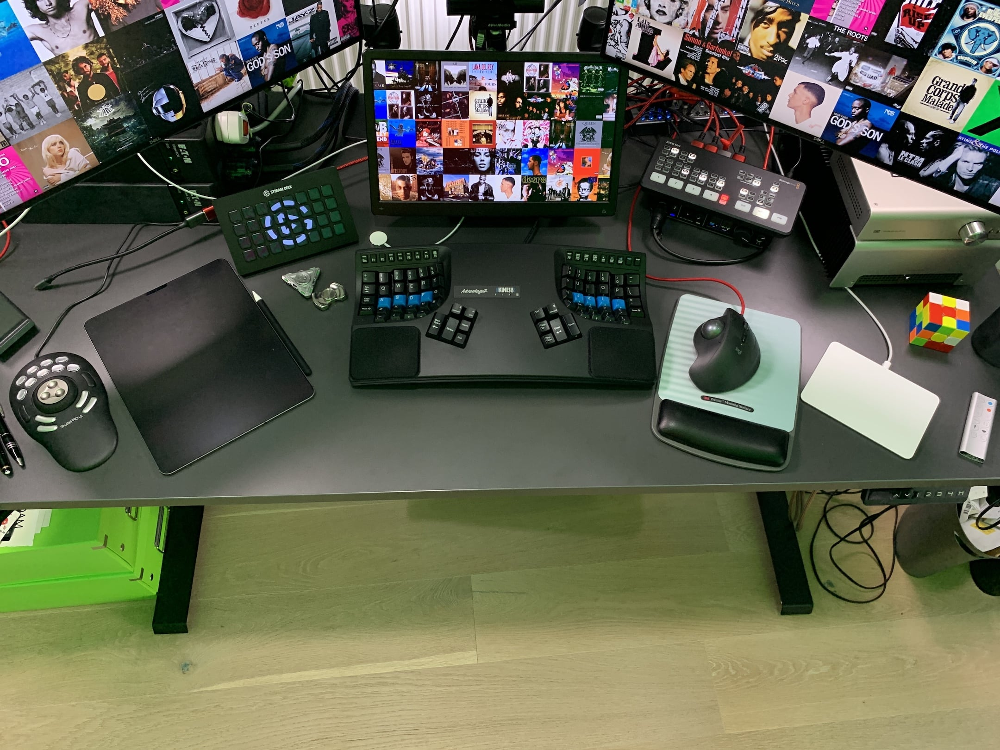

Updated June '22:
- added Mac Studio as primary computer (Mac Mini as secondary)
- removed the eGPU as the Mac Studio can drive 4 screens itself
- added one monitor (5 total)
- one monitor set vertically (amazing!)
Original post: Home Office Setup
Below post updated accordingly.
I love working and spend a lot of time at my desk - investing in the best setup possible, constantly improving, has become a passion.
This setup enables me to:
- have a very professional online appearance, live or for recordings (IRL I used to spend a lot on suits, so that free'd up budget 😇 )
- increase my productivity / output drastically
- make me feel like a ninja.. or having my own Batcave station... geek joy 🤓
While my setup might be seen as an overkill by most, the investment is more than worth it, for me. To each their own :)
Keeping in mind my computer use is wider than most:
- Business
- Online Sales Demos
- Programming (Python) / 100+ scripts (always at least one running in the background)
- Database Management
- Graphic Design (eg Sales graphics)
- Video Editing (eg Sales videos)
- Hi-Fi (lossless playback)
Pictures
Updated pictures to come. See Home Office Jan '22 setup for reference
Focus on Controllers
I am a fan of using the right tool for the job.
Case in point, I use 7 different types of input control devices on my desktop! 😁 And feel handicapped without them now.
Highly recommend each, battle-tested.

From left to right:
Contour ShuttlePRO v2
for video editing of sales demo/promo videos (eg with Screenflow)... and gaining great playback controls when watching meeting recordings, ie skip, pause, fast forward, etc.. (much more efficient than attending live :)
iPad with GoodNotes (app) + Paperlike (screen protection with a paper feel)
for notes-taking, sketching ideas, etc.. App + screen protection make it a great experience, without them it does not work for me.
Elgato Streamdeck
if I had to choose only one in this list, it would be this. I have 300+ automations behind this, and keep adding more - brings your sales demos and daily work to another level. Designed by/for gamers and streamers originally. Amazing for business purposes too :) "Programmable keypad" doesn't do it any favours. Automate almost anything with it.
Keyboard Kinesis Advantage2
One year into having switched to it, and I can’t imagine working without it anymore. Steep learning curve, but amazing ergonomics and efficiency, especially with the 2 thumb keys clusters. Normal keyboards feel weirdly conceived and slow now :)
BlackMagicDesign ATEM Mini
to control your appearance and extend your possibilities during online meetings. See if your audio/video is live, hardware buttons to mute/unmute, show/hide, share your iPad screen as webcam, and much more. Designed for live streaming originally.
Logitech trackball with programmable keys
trackball makes navigating a large screen estate (eg my 4x screens) a breeze + sifting through emails and browser tabs only with the mouse thanks to the programmable keys (mark read, delete, etc..)
Apple Magic Trackpad
for navigating large images or documents, especially in apps like Adobe Illustrator, Photoshop, etc..
Full Home Office Setup
Here is a detailed list of the components of my setup:
Audio
- Airpods Max from Apple
- M2 Audio Interface from MOTU - "Best in class audio quality, speed, and metering"
- VIDAR from Schiit - "INTELLIGENT STEREO/MONO POWER AMPLIFIER"
Chair
Computers
Controller
- Streamdeck XL from Elgato - "Stream Deck puts 15 LCD keys at your fingertips for unlimited studio control."
- ATEM Mini from Blackmagic Design - "ATEM Mini switchers make it easy to create professional video productions - live or for recordings - for innovative business use."
- ShuttlePRO v2 from Contour - "Contour ShuttlePRO v2 is the perfect productivity accessory for video, audio or photo editing applications on PC or Mac."
- iPad Pro from Apple
Desk
Desk Accessories
- LX Desk Monitor Arm (matte black) from Ergotron - "Find your best view, save desk space and discover your most productive self, thanks to the LX Desk Monitor Arm."
- MULTI MOUNT from Elgato - "Modular Rigging System"
- Speedcube
- 13 ports USB hub
- standing wireless charger from Anker
Keyboard
- Kinesis Advantage 2 from Kinesis - "Ortholinear contoured keyboard designed to provide maximum comfort and productivity"
Light
Microphone
- NTG3 Shotgun from RØDE - "Superior broadcast sound quality"
- Yeti from Blue
Monitor
- 2x Dell UltraSharp 27"4K USB-C Monitor U2720Q (3840 x 2160) from Dell
- Beetronics 12" 1080p monitor for screensharing and screen recordings
- 1x cheap 1080p display for teleprompter
Teleprompter
- PT-ELITE-PRO from IKAN - "LARGE TABLET TELEPROMPTER"
Trackball
- MX ERGO ADVANCED WIRELESS TRACKBALL from Logitech - "Find your own degree of comfort"
Webcam / Camera
- Blackmagic Pocket Cinema Camera 4K from Blackmagic Design - "The world's smallest Ultra HD live studio camera!"
- PW513 from AVerMedia - "Webcam wide-angle 4K Ultra HD Video for live streaming or conferencing with Camengine AI Auto-Framing, ePTZ, Noise Cancellation."